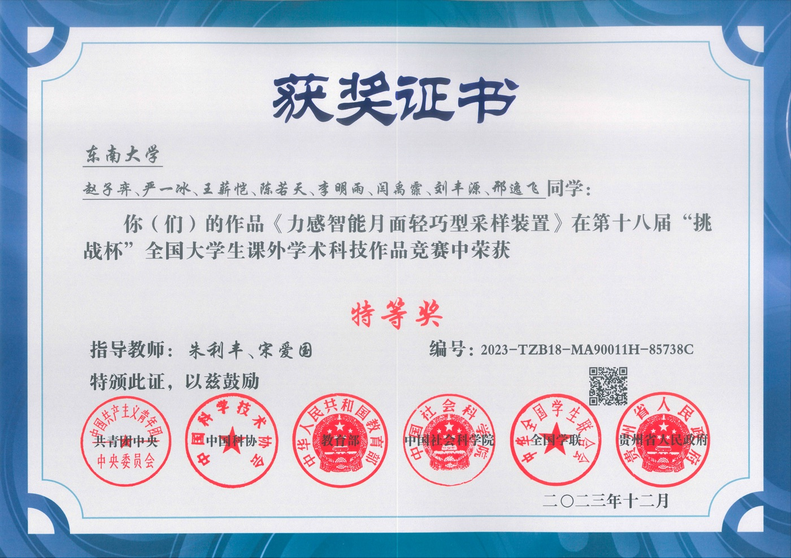

About
I am currently a first-year PhD student in the State Key Laboratory of Digital Medical Engineering, Southeast University, supervised by Prof. Lifeng Zhu, and I am also involved in joint training at the Shanghai Innovation Institute (SII) under the co-supervision of Prof. Lixin Yang and Prof. Cewu Lu.
I got my B.Eng at the School of Instrument Science and Engineering, Southeast University in 2023.
My research interests include Embodied AI & Robot Learning, Multimodal Understanding & Generation, Human-AI Interaction & Haptics, and Medical XR & Robotics.
I'm always looking for related collaboration. If you are interested to chat with me, feel free to drop me an email.
Interests
Education
Experiences
 Mar, 2025 - Aug, 2025
Mar, 2025 - Aug, 2025
News
Recent updates- One paper accepted to ECCV 2026 🇸🇪.
- One paper accepted to ICLR 2026 🇧🇷.
- As Team Leader, won 3rd Place in the IROS 2025 🇨🇳 InternUtopia & Real-World Challenge, Track 1 (Manipulation).
- One paper accepted to ISMAR 2025 🇰🇷, and nominated for Best Poster Award.
- One paper accepted to IEEE VR 2025 🇫🇷, and selected for Oral presentation.
- Won Outstanding Award (Top 5%) in the 18th Challenge Cup National College Student Extracurricular Academic and Technological Works Competition.
Publications


Paper Notes
Notes on papers I have read and want to share, focusing on the ideas, figures, equations, and implementation details worth revisiting.
Honors & Awards
Selected honors
Outstanding Award (Top 5%)
18th "Challenge Cup" National College Student Extracurricular Academic and Technological Works Competition.
Project: 力感智能月面轻巧型采样装置
Team: Ziyi Zhao, Yibing Yan, Xinkai Wang, Ruotian Chen, Mingyu Li, Yufei Yan, Fengyuan Liu, Yifei Xing.

Third Place Award, Track 1: Manipulation
InternUtopia & Real-World Challenge on Multimodal Robot Learning.
Team RoboSoul: Xinkai Wang, Chenyi Wang, Fucheng Zhang, Xinyu Zhan, Bokai Lin, Yifu Xu.